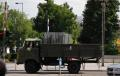

Hajnali végszó: Visszakaptuk a lufikat és a héliumot. Nem vesztek kárba! A
Bombagyár mint az utolsó "harcoló alakulat" vonult haza, a fél BRFK által kergetve. Képek
később! 22:15 Neo üzent. Vagy tizenöt
gárdista-társával az V. kerületi rendőrkapitányságra állították elő. Közben kiszabadultak a
lufis fiúk. Ők a VI. kerületi kapitányságon raboskodtak. Garázdaság miatt indítanak ellenük
eljárást, de ahogy az előadó fogalmazott, "lehet, hogy mégsem". Természetesen bepereljük a
rendőrséget, és a járulékos károkat is kifizettetjük velük, például a hélium és a lufik árát,
illetve a gázpalack bérleti költségét, ami naponta 85 forint. Kár, hogy legalább két év, mire
ebből lesz valami.
20.25 Az alábbi felvételt
Borisz készítette. Kommentár nem szükséges.
Tudósításunkat ezzel befejezzük.
20.22 Az Index információi szerint az egyik tévéstáb operatőre a fején
sérült meg a tüntetők üvegdobálása miatt, gárdaszimpatizánsok pedig megrugdosták
újságírójukat.
20.16 A rendőrök felszólították a
tömeget, hogy hagyják el a helyszínt. Még nagyjából ötven gárdista lehet a területen, de a
tüntetők lassan elhagyják a helyszínt.
20.09 Hermetikusan lezárták a
Gödör területét, még a sajtót sem engedik mozogni. Tomcat egy 'Igen! MSZP' feliratú
táblával jelent meg, és letette a rendőrsorfal elé. Az emberek nevetve fényképezték. Amikor
azonban a táblát megpróbálták felszerelni egy fára, a rendőrsorfal felszólítás nélkül
megtámadta őket, Tomcatet leteperték és félrehúzták. Közölték vele, hogy előállítják, ő
viszont tiltakozott, amiért nem volt felszólítás. A parancsnok azt mondta, most az
egyszer megúszta, és elengedték.
20.04 Nemcsak
a mentők, már a kórházak sem bírják a tempót. A Barikád információi szerint eddig kilenc
életveszélyes sérültje van az őrült és agresszív rendőrattakoknak.
19.56 A tüntetők megtámadták a kamerás rendőrautót. Néhányan kukákat
kezdtek borogatni, de a többség ellenzi ezt.
19.48 A téren az a hír járja, hogy Morvai Krisztina is a környéken volt, de a
rendőrök elfogták és feltartóztatják.
19.45 A gárdisták többségét előállították. Már nagyon kevesen maradtak a
téren. A rendőrök levették a gázmaszkot és visszatértek a kutyás rendőrök. Sok
gárdista fekszik a földön.
19.43 Toroczkai
László tudósítónknak elmondta, hogy nagyon brutálisan fogták el Vona Gábort, majd
rendőri felvezetéssel a József Attila utcába szállították.
19.37 A sajtó érdeklődése közepette újabb gárdistákat
kell ellátniuk a mentőknek.
19.33 A
tüntetők megpróbálták megrohamozni a civil rendőrautót, amelyben Vona Gábort
elszállították.
19.23 Újabb összecsapás. A gárdisták Vonát védik.
19.21
Vona a
gárdisták közé ült. Közleményében tüntetést jelentett be: a Jobbik Magyarországért Mozgalom július 11-én, szombaton
17 órára a budapesti Szabadság térre tüntetést szervez, tiltakozásul a Gárda
elleni atrocitások, különösen a mai napon történtek miatt. A demonstráción
ismertetjük, hogy a Gárda megmentésének ügyében milyen konkrét lépéseket fogunk
tenni.
19.16
A Barikád információi szerint megérkezett a térre a
Jobbik Magyarországért Mozgalom elnöke, Vona Gábor. Úgy tudjuk, sem Zagyva
Gyulát, sem Toroczkai Lászlót nem állították még elő.
19.11
A Szent Korona Rádió egyik
tudósítóját is kórházba kellett szállítani. Közben néhány rendőr rosszul
lett a könnygáztól.
19.07 Tudósítónknak egy
rendőr nyíltan kijelentette, hogy undorodik attól, amit csinálnia kell.
19.05
Egy idős férfi
rosszul lett, őt a rendőrök kiemelték a tömegből. Egy gárdista fekszik a
földön, körülötte három rendőr és mentősök vannak. Közvetlenül közelről
lefújták, ettől lett rosszul. Hiába volt rajta gázálarc, a rendőrök
szándékosan az álarc alá fújták a gázt, ettől vesztette eszméletét. A többi
gárdista szemcseppentővel kezeli.
A rendőrök
végül nem állították elő.
18.57 A rendőrök oszlatóköteléket
formálnak a régi buszpályaudvarnál.
18.55
Néhány fiatal maszkokat vett
föl és a Gödörből bútorokat kezdtek kihordani, hogy azokkal
támadjanak a rendőrökre, a tüntetők azonban megállították őket.
A Gödör
éppen bezárni készül, ezután várhatóan kevesebb turista és
bámészkodó marad majd a helyszínen.
18.53 Oszlatás és véresre vert tüntetők Budapesten.
Képriport.
18.49
A rendőrség még mindig nem tud
érvényesülni, a tüntetők védik a gárdistákat és visszatartják az
oszlatókat. Úgy tűnik, patthelyzet alakult ki, nem tudnak mit
kezdeni a gárda taktikájával.
A vízágyús kocsi nem tud
behajtani a térre.
18.45
Egy gárdista arról
tájékoztatta egyik tudósítónkat, hogy az Egerből Pestre indult gárdisták
közül a többség azért nem érkezett meg, mert – ahogyan
arról korábban már beszámoltunk – a rendőrök út közben
feltartóztatták őket.
18.43
A gárdisták már állnak. A rendőrök igyekeztek a parancsnokokat
kiemelni, többet el is sikerült hurcolniuk a törvényellenes
gyorskötözőt használva. A Gödör melletti tó a rendőrök
felszereléseivel, sisakokkal, rádiókkal, tonfákkal van tele.
18.40 A Szent Korona Rádió tudósítóját
sajtóigazolványa felmutatása ellenére gumibottal verték meg.
18.35
A rendőr most fejezte be Tomcat pólója miatti
igazoltatást. Elbúcsúzásakor a rend őre figyelmeztette Tomcatet,
hogy vigyázzon magára, mert később még megcsúszhat. A hivatalos
személy fenyegetéséről hangfelvétel készült.
18.33
A HunHír információi szerint két súlyosan sérült
gárdista van: egyikük szívinfarktust, másikuk tüdőembóliát
kapott. A rendőrök az oszlatást különösen kegyetlenül,
erőszakosan hajtották végre, mindenkit megvertek, akit
értek.
18.28
Egy rendőrt mélységesen fölháborított Tomcat
pólója, melynek hátulján az olvasható: buzi, aki
igazoltat. Azonnal igazoltatás alá vonta.
A Bazilikánál lévő rendőrök
szerint oszlatás van: a szélsőjobbot oszlatják.
18.17 A rendőrök
felvilágosítása szerint a Szabadság tér és a Kossuth tér
közötti szakasz van lezárva. Folyamatos a
rendőrségi helikopter pásztázása.
18.15 Bevetették a könnygázt, mert a rendőrök veszélyben
érezték magukat. Az embereket egymásnak szorítják, a
földre kerülteken átgázolnak. Újabb két személy rosszul
lett.
18.14 A Deák
Ferenc térnél tudósítónk szemtanúja volt, hogy egy
férfi ásványvizet szeretett volna adni a gárdistáknak, a
rendőrök azonban rátámadtak és többen ütni-verni kezdték
gumibotjaikkal.
A Batthyány-örökmécsesnél
minden utca le van zárva, a szovjet emlékművet különösen
védik. A rendőrök itt jól érzik magukat,
viccelődnek.
18.10 Kövek és palackok
záporoznak a rendőrök felé. A Szent Korona Rádió
tudósítása szerint a rendőrök egy esküvőt is
körbevettek. A násznép csak rendőri kísérettel hagyhatta
el a területet.
18.09 A tüntetők kezdték
kiszorítani a rendőröket. Közben egy gárdista rosszul
lett, őt mentő vitte el.
18.07 Több tudósítónkkal megszakadt a kapcsolatunk.
Aki még elérhető, folyamatosan küldi a híreket.
18.01 Több busznyi rohamrendőr érkezett a helyszínre.
A Barikád beszámolt róla, hogy a gárdisták
gyűrűjében ül már Toroczkai László, Kiss Róbert főkapitány és
Potyka bácsi ('56-os hős) is.
17.56 A rendőrök teljesen tanácstalanok, de úgy
tűnik, a téren egyre kevesebben vannak. A Magyar Gárda
láthatóan sokkal felkészültebb és szakszerűbb volt,
mint a rendőrség.
17.53 A
rendőrök elhagyták a Nemzeti Kávézót, de Toroczkait még
nem engedték el.
17.51 Több
gárdistát a falhoz nyomtak a József Attila utcában,
már vagy egy tucatnyit előállíthattak.
17.49 Az egyik rendőr sisakja a Gödör melletti tóba
került, több kollégája próbálja kihalászni.
17.46 Több vérző fejsérültet is láttak
tudósítóink. Hamarosan fényképekkel is
jelentkezünk.
17.43 További gárdisták
érkeznek, a tömeg éljenez. Az eszméletét vesztett
gárdista rendbe jött, visszatért a többiekhez.
A
gárda nagyon pontosan, fegyelmezetten dolgozik. Egyelőre nem
várható könnygáz bevetése, mert nagyon sok a turista
a területen.
17.41 Kiürítik és
körbekordonozzák a Vértanúk terét is.
A tömeg
megdöbbenve követte, ahogyan kezüknél-lábuknál fogva
húzták-vonták a gárdistákat. Rendőrellenes jelszavak
hangoznak el.
17.37 Verekedés
tört ki a rendőrök és a földön ülő gárdisták
között, utóbbiak pedig mindent megtesznek, hogy a földön
maradhassanak. Akit föl tudnak állítani, bilincsben
vezetik el.
17.34 Egy gárdistát
bilincsben visznek el a rendőrök. A tömeg a gárdát
élteti, pattanásig feszül a helyzet.
A mentők beálltak a
térre, egy idős gárdista rosszul lett,
eszméletét vesztette. A rendőrök és mentősök megpróbálják kiemelni
a tömegből. Az emberek a rendőröket szidják, az emberek
pedig körbeveszik a rendőröket, nagyon
szakszerűtlen az eljárás. A rendőrök nem tudnak mit tenni a
földön ülő gárdisták ellen, ezért rángatni kezdték
őket.
17.33 Egy-két tucat ember gyűlt össze
Csíkszeredán, ahol a HVIM helyi szervezete
szimpátiatüntetést tartott Budaházy György mellett.
17.32 Az
Erzsébet tér ketté van vágva, gyakorlatilag minden utcát
lezártak, sokan a téren rekedtek, a turisták
tanácstalanok.
17.25 A rendőrök egyesével
emelik ki a gárdistákat. Kutyás rendőrök
is megjelentek. Nagy a káosz.
17.21 Lezárták a rendőrök a Bajcsyt is.
17.19 Szerverünknek
hihetetlen rohamot kell
elviselnie. A Novara és kapitánya a helyén van, a néhány
másodperces kimaradásokért és lassulásért elnézést
kérünk. A tudósítás folyamatos.
17.15
Elhangzott az első
felszólítás a Gödörnél, ahol még szól a
zene. A gárdisták zárt alakzatban álltak, majd
a földre ültek és összekapaszkodtak. A Himnuszt
kezdik énekelni, de azt a szirénák hangja nyomja
el.
Az emberek nyugodtak. A rendőrök nem
engedik elmenni a tüntetőket. Oszlatóék állt
föl, a gárda várhatóan fölveszi a harcot.
17.14
A Gödörnél egy spontán
tüntetés alakult ki: az emberek a gárdát éljenzik.
A gárdisták fölvették mellényeiket.
Körülbelül 500-600 gárdista és legalább kétszer ennyi
szimpatizáns van jelen, akik kijelentették,
hogy biztosan maradnak.
17.11 A tévészékház mellől
elindult a vízágyú.
17.09 Kiss
Róbert, a Magyar Gárda főparancsnoka az
Erzsébet téren tart gyülekezőt, innen akarnak átvonulni a
Bazilika mellé. Közben tüntetők
gyülekeznek spontán a Deák téren.
17.07 Olvasónk szerint az
Alkotmány utcában egy ablakból uborkás
szendviccsel dobták meg a rohamrendőröket, akik
ezután a társasház kaputelefonján próbálják
elérni, hogy valaki beengedje őket.
17.05 A Kossuth téri tüntetés
betiltását Gonda László tudomásul vette. Most
19.00-ra a Vértanúk terére jelentettek be
demostrációt.
17.03 A Nemzeti
Kávéházban még mindig tart az igazoltatás,
melyet vélhetően szándékosan húznak el, hogy
a szervezők ne érkezhessenek meg az eredetileg
megbeszélt időpontban. Az igazoltatásnak
jól szabályozott rendje van, melyet a
rendőrök megsértenek, amikor a kávézóból senkit sem
engednek ki és az eljárást szándékosan
lassan végzik.
17.00 A
Kossuth téren több száz rendőr van,
de tüntetőt nem látni. Tudósítónk beszélt turistákkal,
akik nem értik, mi történik.
Mivel nem látnak tüntetőket, azt gondolják, csak
gyakorlat van, de értetlenkednek, hogy miért
a turistaszezon szombat délutánján, és miért
nem engedik őket szabadon távozni
néhány területről.
16.53 A
Bazilikánál még mindig nem engedik elmenni a
bent rekedt turistákat, akik egyre
elégedetlenebbnek tűnnek, néhányan pedig szót is
emeltek a rendőri eljárás miatt.
16.51 A Gödörnél egyre több a rendőr és a gárdista is.
16.49 Elhunyt Király Béla vezérezredes – tudatta a Honvédelmi
Minisztérium. 1956-ban
a Nagy Imre jóváhagyásával megalakított
Nemzetőrség főparancsnoka, Budapest
katonai városparancsnoka volt.
16.45 Most érkezett a hír: a
Kossuth téri tüntetést mégsem engedélyezik.
A tévészékház mögött járó motorral
állnak az izraeli és a régi vízágyús
járművek, valamint a tűzszerészet
autói.
A Szent István parkban a hírek
szerint cigány és zsidó szervezetek
ünnepelnek.
16.42 A Bombagyár 20 órai találkozója a
Nemzeti Kávézóban még
mindig aktuális, függetlenül az ottani
rendőri jelenléttől.
16.39 A Bazilikánál a
gárdisták nem a szokásos egyenruhájukat,
hanem fekete nadrágot és fehér
inget viselnek, a rendőrök mégis igazoltatják
őket.
16.36 Gaudi-Nagy Tamás
szerint jogellenes a rendőrség
azon eljárása, ahogyan a tiltó
határozatot kézbesítették. Közben Gonda
László spontán tüntetést jelentett be
a Kossuth térre, amit a rendőrség tudomásul
vett, ezért többen a térre
tartanak. A Kossuth tér nincsen teljesen
körbekordonozva.
16.33 Mivel
minden bejelentett rendezvény helyszínét
őrzik a rendőrök, többen a
Kossuth tér felé vették az utat. Kossuth téri
tudósítónk szerint azonban nagyon
komoly a készültség a Parlament
előtt, de egyelőre csak néhány hagyományosan a
téren tüntető Kossuth téri
vitatkozik a rendőrökkel.
16.31 A Szent Korona Rádió
információi szerint néhány perce a
rendőrök a Nemzeti Kávézóban az
igazoltatás után adták át a tüntetést megtiltó
határozatot Zagyva György
Gyulának, a HVIM elnökének.
16.25 A rendőrök teljesen
lezárták a Szabadság
teret, senkit sem engednek be. Több turista
a lezárt Bazilikában rekedt, de
őket sem engedik ki.
Egy
ötvenévesnek tűnő férfi zászlóval a
kezében sétált a tér mellett, de a
rendőrök azonnal megállították. A
lakásokból kikiáltva szidják a szemtanúk
az eljáró közegeket.
16.20 A Barikád
információi szerint a rendőrök
igazoltattak egy háromfős cigány
társaságot, akik a járókelőket
zaklatták. Egyikük ellen lopás miatt
elfogató parancs volt érvényben,
ezért őt előállították. Korábbi
hírek alapján szintén
előállítottak egy körözött
személyt.
Eddig legalább nyolc embert
állítottak elő, de a tüntetés
kezdetéig még negyven perc hátra
van.
16.15 Tudósítónk szerint a
Gödörnél gárdistákat
igazoltatnak.
16.14 A Szent Korona Rádió
információi szerint egy
osztagnyi rohamrendőr jelent meg a
Nemzeti Kávézóban, ahol
Toroczkai László és Zagyva Gyula a HVIM
néhány tagjával várták, hogy
elinduljanak a bejelentett
tüntetésükre. Igazoltatni kezdték a
kávézóban tartózkodókat.
16.06 A BRFK
sajtóosztálya és Tafferner Éva szóvivő
telefonon elérhetetlennek
bizonyulnak.
16.01
Az Anker közből
négy embert állítottak elő, akik
a Bombagyár terrorlufijait
készültek osztogatni. A
helyszínen eljáró rendőrök szerint
a luftballonok félelem
keltésére voltak alkalmasok,
ezért garázdaság miatt vált
szükségessé a fiatalok
előállítása.
Eközben a
Bazilikánál a rendőrök
akadályozzák a jobboldali sajtó
munkáját, a HírTV munkatársait nem akarták
a térre engedni.
15.56 Az Erzsébet-híd még
mindig le van
zárva a gyalogosforgalom elől,
a Lánchídon pedig valamilyen
rendezvényt tartanak. A
városban több helyen rendőrök irányítják
a forgalmat és egy a
hétköznapokra jellemző
közlekedési dugót eredményez. A
kisebb utcákban több csoport
rendőr várakozik.
15.54 A Bazilikát hermetikusan
körbezárták, bár ott
egyelőre csak
harminc-negyven tüntető tartózkodik. Az
utcákon több ezer rendőr
van. Tudósítónk szerint a
turistákkal szemben is elég
agresszívak a rendőrök, de legfőképp
azokat vegzálják, akik
bármilyen nemzeti
jelképet viselnek.
15.49 A
Bombagyár több mint egy
tucat tudósítóval van a
helyszíneken. A Deák téri aluljárót
ellepték a bevetési
egyenruhás rendőrök.
15.45 Bár az Anker köz
meglehetősen messze van
a tüntetés bejelentett
helyszínétől, mégis nagy
erőkkel vonult ki a rendőrség. A
lefoglalás miatt egyetlen
luftballont sem sikerült
kiosztani.
A Bombagyár
rendőrségi forrásból már
tegnap értesült róla, hogy a
terrorlufikat a rendőrök
kiemelt figyelemmel fogják
keresni. Nem világos, hogy milyen
jogalapon jártak
el a rendőrök, hiszen az
érintettek csak közterületen lufikat
fújtak föl.
15.41 A
rendőrök lefoglalták a
Bombagyár
terrorlufi-töltőállomását az Anker közben.
Nem világos, hogy milyen
jogalapon foglaltak le
minden megtalált
luftballont és a hozzájuk tartozó
héliumot.
Kétbusznyi
rendőr rohanta le az Anker
közt és hermetikusan
lezárták. Az igazoltatások
zajlanak. 15.30 Tudósítónk még
mindig élő kapcsolatban van. A
rendőrök
kérdőre vonták, mi van az
ásványvizes palackjában, mire ő azt
válaszolta, hogy
vizelet. Arról egyelőre nincs
információnk, hogy
megkóstolták-e a biztos
urak.
A telefonos
kapcsolat itt megszakadt. 15.27 Az Anker
közben civil és egyenruhás
rendőrök
ruházatátvizsgálás alá vonták a
terrorlufikkal közlekedőket.
Tudósítónkat élő telefonos
kapcsolatban vonták eljárás
alá.
15.18 Bár a
rendőrség weboldalán
BRFK Kommunikációs Osztálya
aláírással megjelent,
hogy a rendőrség
betiltja a tüntetést, valójában
ilyen jogköre nincsen. A
tüntetés szervezőinek
nem kézbesítették a
határozatot, így nem is
érvényes.
15.12 A bíróság döntése
értelmében a Magyar
Gárda Egyesület és a
Magyar Gárda Mozgalom csak
formailag különül el,
egységes
képződményként kell kezelni, ezért
a jövőben a rendőrség
intézkedést fog
kezdeményezni, ha gárdista
egyenruhában jelennek meg,
illetve vonulnak
közterületen–
áll a rendőrség
weboldalán megjelent
közleményben. Szintén elérhető
a Hatvannégy Vármegye
Ifjúsági Mozgalom egyik tagja
által 17.05-re
bejelentett tüntetés
elutasításának közleménye. 15.07 Az eredetileg betiltott tüntetés melletti
szimpátiatüntetést is
betiltotta
a rendőrség, így a betiltott
tüntetés miatt betiltott
tüntetés melletti
szimpátiatüntetést
jelentettek be a gárdisták
– tudta meg a
Bombagyár. 15.00 A rendőrség
a Szent István téri
tüntetést sem
veszi tudomásul, arra
hivatkozva, hogy elkésett a
bejelentés. A korábbi
bejelentések elutasítása
miatt azonban nem volt
lehetőség időben
bejelenteni az új helyszínt.
14.35 A
Országos Rendőr-főkapitányság
szóvivője bejelentette, hogy a
Magyar Gárda
Egyesület csütörtöki
feloszlatása miatt
minden egyenruhás gárdistával
szemben
intézkedni fog, mert a mozgalom
tagjainak
egyenruhája másokban félelmet,
riadalmat kelt. Eddig
három embert állítottak
elő.
A
Bombagyár információi
szerint több száz gárdista
ettől függetlenül
rendszeresített
egyenruhájában fognak
részt venni a
tüntetésen.
14.17 17.00-tól a csíkszeredai
Magyar
Konzulátus előtt is
szimpátiatüntetést tartanak.
14.11
A Szent Korona
Rádió
információi szerint az
Egerről érkező tüntetők
buszát a
rendőrök
feltartóztatták, az utasokat
igazoltatják.
14.00 Felderítőink
jelentik.
A
Szabadság teret
és a Bazilika előtti teret
teljesen
körbekordonozták, csak az egyelőre
nyitva hagyott kapukon
lehet bejutni. Még
a mélygarázsok
kapuit is
eltorlaszolták. Egyelőre
nincs kint ezernyi
rendőr, de igen
sokan vannak, a hidak
és középületek
környékén megerősített
járőrök
cirkálnak, és kamerás
furgonok pásztázzák a
járókelőket. A Kossuth
téren azonban
semmilyen kordon
nincs.
A
Szabadság téren
elhagyatottan árválkodik Rogán
Antal
falból odarendelt
ugrálóvára. Ez lenne az
a fontos családi
rendezvény, ami
miatt a tüntetést nem
lehetett tudomásul
venni. Egy lélek
sincs körülötte,
csak a tulaj üldögél az
árnyékban
unatkozva.
13.30 Előző
jelentésünk
pontosításra szorul. A
rendőrség nem zárta
le a hidakat, csak
a Lánchíd
van zárva a Nyár a
Lánchídon nevű
kirakodóvásár miatt. A
forgalom
zavartalannak látszik a
másik két hídon, a
lezárásról a HunHír
adott hírt. Most azt
írják, az
Erzsébet hídon tilos
a gyalogos forgalom. Ezt
nem ellenőriztem,
de
elképzelhető. A Bazilika
környékén óriási
rendőri erő gyűlt
össze, a
mellékutcákban több tucat
furgon és járőrkocsi
parkol, a környéket
blokád alá
vonják.
12.10
A városban még nyugalom
van, de a
rendőrség
már lezárta a
Szabadság-hidat, az Erzsébet-hidat
és a
Lánchidat. A Szabadság tér
környékét elborították
a kordonok. Az
eredetileg oda bejelentett
tüntetést Rogán
Antal csicskái
azzal
próbálták ellehetetleníteni,
hogy "családi
programokat"
szerveztek a térre, amit a
rendőrség
készségesen tudomásul
vett, annak
ellenére, hogy a
hazafiak jóval előbb
jelentették be
rendezvényüket.
A HVIM és
a
csatlakozó
szervezetek
villámtüntetést jelentettek be
17.10-re a Bazilika
elé, a
rendőrségi jogtiprás
elleni tiltakozásul.
Rendőrségi
forrásaink szerint
erőszakos fellépés
várható, különösen a
Magyar Gárda
egyenruhájára
utaznak, de
zaklatásra számíthat
az is, aki támogatói
polóban van, vagy
egyszerűen hazafias
öltözéket
visel. Ahogy az
lenni szokott... Nem
javasoljuk senkinek,
hogy pont ma
vegyen fel
Nagy-Magyarország
pólót, és a
csoportosulást sem. Az V.
kerület háborúra
készül a békés
állampolgárok
ellen. Kérjük, különösen
figyeljetek a
provokátorokra, akik
valószínűleg - a
szokásos
módon - önkényuralmi
jelképekkel jelennek
meg,
rendbontással, például kukák
felgyújtásával
próbálkoznak vagy
agresszív
jelszavakkal kezdik
tüzelni az
egységsugarú tüntetőket.
Igyekezzetek az
ilyeneket
hatástalanítani. Elzavarni
nem elég, mert
akkor
máshol folytatja. Rengeteg
civil ruhás
rendőr is fog
cirkálni az utcákon,
ezért vigyázzatok,
kinek árultok el
titkokat,
értesüléseket.
Tudósításunk 16
óra körül
indul,
Bloginhoz futnak majd be a
hírek, innentől ő
folytatja ezt a
tudósítást. Időről
időre fényképeket
is igyekszünk
kitenni. Figyeljétek
a
Bombagyárat, továbbá a Szent
Korona Rádiót és a
HunHírt. A HírTV
is a helyszínen lesz.
Sokkal
jobb lenne azonban, ha
minél többen ki is
jönnétek, és részt
vennétek a
Nagy Lufis
Flashmobban. Az eddig
megszokott
módon várható a nemzeti
hírportálok zavarása,
hackertámadással
való bénítása.
Gabucino a
helyén van, mindent
megtesz, hogy a Novara
ezúttal is
dacoljon az
ellenséges
tűzzel.
No. Hát, én az elmúlt napokat sajna teljes hírkaranténban töltöttem, úgyhogy nem tudtam, hogy ilyen ótvarmód bejött, amire számítottam. Most az egyszer nem esik rosszul, hogy "én megmondtam". A napnál világosabb volt, hogy itt ez lesz...
Egyébként pedig a gárdistáké és a szimpatizánsoké minden csodálatom és tiszteletem.
"Parancs megtagadása esetén börtön várhat rájuk.
Tömeges parancsmagtagadás esetén viszont nem esik bajuk."
Nagyon bölcsen tetszik látni a dolgot.Örülök, hogy rájöttél, egyedül semmiféle nagyszabású dolgot nem lehet elérni, és semmilyen társadalmi - gazdasági berendezkedést nem lehet megváltoztatni.
Egy rendőrt lecsukhatnak.Kettőt is.Tizet is, huszat is, sőt még száazt is ha a többi gyáva, és áruló.Na de az összeset?Mulatás lenne.:D
Nem véletlen, hogy ennyire erőltetik a liberalizmus egyéniségkultuszát, és nem véletlen testvér, hogy tűzzel - vassal üldözik a nacionalizmus közösségteremtő eszméit.
Egyedül semmi vagyok, de nélkülem ők is semmivé lesznek.
Megvetést mutatva a rendőrök felé nem fognak a helyes oldalra állni.
Éreztetni kell velük, hogy azonosak a céljaink, mi adjuk a kenyerük, és a parancsot kiadó feletteseik álltak az ördög szolgálatába, rossz parancsokat kiadva. Parancs megtagadása esetén börtön várhat rájuk.
Tömeges parancsmagtagadás esetén viszont nem esik bajuk.
Minden helyes értékrendő ember, végzettségtől, foglalkozástól, származástól függetlenül egy tökéletesen működő országot szeretne, ahol becsülete van a munkának, tudásnak, közösségért végzett tevékenységnek.
Privát üzenet Csak regisztrált felhasználók olvashatják el.
209. Gábriel angyal
2009-07-05 13:29:00
Egyébként visszanézve a videókat, azért ez egy jól megtervezett Fidesz pofon is volt, ahol jól kijött a Vona féle közösségvállalás a Fidesz elnök féle, páncélautóval menekülök-kel szemben. :)